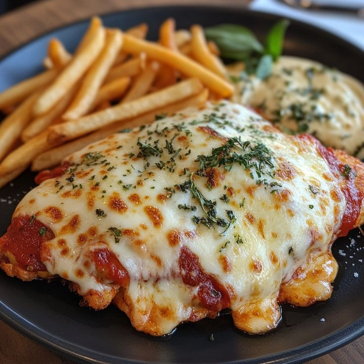

Frango à Parmegiana
Peito de frango empanado, coberto com molho de tomate e queijo gratinado, servido com arroz e batatas.

Ingredientes
- 4 filés de peito de frango
- 2 ovos
- 1 xícara de farinha de rosca
- Sal e pimenta a gosto
- 200g de queijo mussarela
- 200g de molho de tomate
- Óleo para fritar
Modo de Preparo
- Tempere o frango com sal e pimenta.
- Passe os filés na farinha de rosca, depois nos ovos batidos e novamente na farinha de rosca.
- Frite em óleo quente até dourar. Reserve.
- Coloque os filés em um refratário, cubra com molho de tomate e queijo mussarela.
- Leve ao forno pré-aquecido a 180°C por 15 minutos até gratinar.
- Sirva com arroz branco ou batatas fritas.
Dica do Chef: Para um sabor extra, adicione orégano sobre o queijo antes de gratinar.